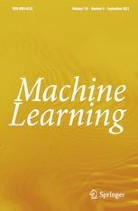

    <div id="sideBar"><!-- 
			
			+++++++++++++++++++++++++++++++++++++++++++++++++
					
			Add things to your sidebar here.
			Use the format:
			
			<li><a href="URL">Link Text</a></li>
		
			+++++++++++++++++++++++++++++++++++++++++++++++++
					
		-->
      <ul>
        <li><br>
        </li>
        <li><a href="http://ijclr22.doc.ic.ac.uk/">Home</a></li>
        <li><a href="call.html">Call for Papers</a></li>
        <li><a href="dates.html">Important Dates</a></li>
        <li><a href="programme.html">Programme</a></li>
        <li><a href="speakers.html">Invited Speakers</a></li>
        <li><a href="submission.html">Submission Information</a></li>
        <li><a href="organisers.html">Organisers</a></li>
        <li><a href="registration.html">Registration</a></li>
        <li><a href="local.html">Venue &amp; Local Information</a></li>
      </ul>
      <h6>Links</h6>
      <ul>
        <li><a moz-do-not-send="true" href="ilp2022.html">ILP 2022</a></li>
        <li><a moz-do-not-send="true"
            href="https://sites.google.com/view/nesy-2022/">NeSy 2022</a></li>
        <li>AAIP 2022</li>
        <li>HLC 2022</li>
        <li>CogAI 2022<br>
        </li>
        <li><a href="previous.html">Previous Meetings</a></li>
      </ul>
      <small><small><small><small><small><br>
                <big><big><big>The proceedings of ILP 2022 will be
                      published in the LNAI series of Springer-Verlag.<br>
                      <br>
                      <br>
                      Selected papers will appear in the Machine
                      Learning journal track.</big></big></big></small></small></small></small></small><br>
    </div>
